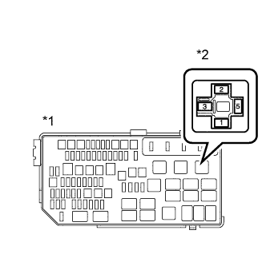

СИСТЕМА ECD (для моделей без DPF) > Цепь предпускового подогрева |
| 1.ПРОВЕРЬТЕ НАПРЯЖЕНИЕ НА КОНТАКТЕ (РЕЛЕ СВЕЧЕЙ НАКАЛИВАНИЯ (GLOW)) |
|  |
Снимите реле свечей накаливания (GLOW).
Измерьте напряжение в соответствии со значениями, приведенными в таблице.
| Контакты для подключения диагностического прибора | Положение переключателя | Заданные условия |
| Контакт 5 реле свечей накаливания - масса | Зажигание включено (IG) | 11-14 В |
| *1 | Блок реле моторного отсека |
| *2 | Реле включения свечей накаливания (GLOW) |
Установите реле свечей накаливания (GLOW).
|
| ||||
| OK | |
| 2.ПРОВЕРЬТЕ РЕЛЕ ВКЛЮЧЕНИЯ СВЕЧЕЙ НАКАЛИВАНИЯ (GLOW) |
Проверьте реле свечей накаливания (GLOW) (Нажмите здесь).
|
| ||||
| OK | |
| 3.ПРОВЕРЬТЕ СВЕЧУ НАКАЛИВАНИЯ (СОПРОТИВЛЕНИЕ) |
Проверьте свечу накаливания (Нажмите здесь).
|
| ||||
| OK | |
| 4.ПРОВЕРЬТЕ СВЕЧУ НАКАЛИВАНИЯ (УСТАНОВКА) |
Проверьте установку свечей накаливания.
|
| ||||
| OK | |
| 5.ПРОВЕРЬТЕ ЖГУТ ПРОВОДОВ (СВЕЧА НАКАЛИВАНИЯ – РЕЛЕ СВЕЧЕЙ НАКАЛИВАНИЯ (GLOW) – МАССА) |
Снимите реле свечей накаливания (GLOW).
Отсоедините разъем свечи накаливания.
Измерьте сопротивление в соответствии со значениями, приведенными в таблице ниже.
| Контакты для подключения диагностического прибора | Условие | Заданные условия |
| Контакт 3 реле свечей накаливания - C98-1 | Всегда | Менее 1 Ом |
| Контакт 1 реле свечей накаливания - масса | Всегда | Менее 1 Ом |
| Контакты для подключения диагностического прибора | Условие | Заданные условия |
| Контакт 3 реле свечей накаливания или C98-1 - масса | Всегда | 10 кОм или более |
Установите реле свечей накаливания (GLOW).
Подсоедините разъем свечи накаливания.
|
| ||||
| OK | |
| 6.ПРОВЕРЬТЕ ЖГУТ ПРОВОДОВ (РЕЛЕ СВЕЧЕЙ НАКАЛИВАНИЯ (GLOW) – ЕСМ И МАССА) |
Снимите реле свечей накаливания (GLOW).
Отсоедините разъем ЭБУ.
Измерьте сопротивление в соответствии со значениями, приведенными в таблице ниже.
| Контакты для подключения диагностического прибора | Условие | Заданные условия |
| Контакт 2 реле свечей накаливания - C91-19 (GREL) | Всегда | Менее 1 Ом |
| Контакты для подключения диагностического прибора | Условие | Заданные условия |
| Контакт 2 реле свечей накаливания или C91-19 (GREL) - масса | Всегда | 10 кОм или более |
Установите реле свечей накаливания (GLOW).
Подсоедините разъем ECM.
|
| ||||
| OK | ||
| ||